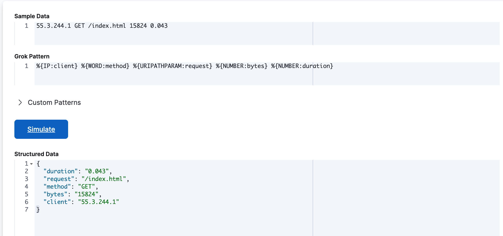

Debug grok expressions
editDebug grok expressions
editYou can build and debug grok patterns in the Kibana Grok Debugger before you use them in your data processing pipelines. Grok is a pattern matching syntax that you can use to parse arbitrary text and structure it. Grok is good for parsing syslog, apache, and other webserver logs, mysql logs, and in general, any log format that is written for human consumption.
Grok patterns are supported in Elasticsearch runtime fields, the Elasticsearch grok ingest processor, and the Logstash grok filter. For syntax, see Grokking grok.
The Elastic Stack ships with more than 120 reusable grok patterns. For a complete list of patterns, see Elasticsearch grok patterns and Logstash grok patterns.
Because Elasticsearch and Logstash share the same grok implementation and pattern libraries, any grok pattern that you create in the Grok Debugger will work in both Elasticsearch and Logstash.
Get started
editThis example walks you through using the Grok Debugger. This tool is automatically enabled in Kibana.
If you’re using Elastic Stack security features, you must have the manage_pipeline
permission to use the Grok Debugger.
- Open the main menu, click Dev Tools, then click Grok Debugger.
-
In Sample Data, enter a message that is representative of the data that you want to parse. For example:
55.3.244.1 GET /index.html 15824 0.043
-
In Grok Pattern, enter the grok pattern that you want to apply to the data.
To parse the log line in this example, use:
%{IP:client} %{WORD:method} %{URIPATHPARAM:request} %{NUMBER:bytes} %{NUMBER:duration} -
Click Simulate.
You’ll see the simulated event that results from applying the grok pattern.

Test custom patterns
editIf the default grok pattern dictionary doesn’t contain the patterns you need, you can define, test, and debug custom patterns using the Grok Debugger.
Custom patterns that you enter in the Grok Debugger are not saved. Custom patterns are only available for the current debugging session and have no side effects.
Follow this example to define a custom pattern.
-
In Sample Data, enter the following sample message:
Jan 1 06:25:43 mailserver14 postfix/cleanup[21403]: BEF25A72965: message-id=<20130101142543.5828399CCAF@mailserver14.example.com>
-
Enter this grok pattern:
%{SYSLOGBASE} %{POSTFIX_QUEUEID:queue_id}: %{MSG:syslog_message}Notice that the grok pattern references custom patterns called
POSTFIX_QUEUEIDandMSG. -
Expand Custom Patterns and enter pattern definitions for the custom patterns that you want to use in the grok expression. You must specify each pattern definition on its own line.
For this example, you must specify pattern definitions for
POSTFIX_QUEUEIDandMSG:POSTFIX_QUEUEID [0-9A-F]{10,11} MSG message-id=<%{GREEDYDATA}> -
Click Simulate.
You’ll see the simulated output event that results from applying the grok pattern that contains the custom pattern:

If an error occurs, you can continue iterating over the custom pattern until the output matches the event that you expect.